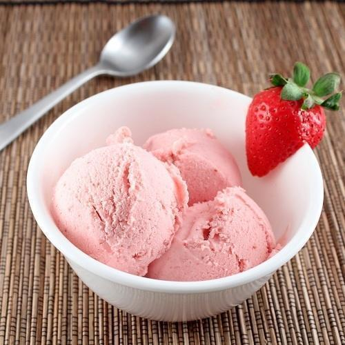

Strawberry Icecream Recipe

This fruity delicacy is a delight to have in any season. Those who absolutely love it wonder how to make strawberry ice cream at home. If you are one of them, our recipe will truly make you happy. Our strawberry ice cream recipe is very simple to follow, and the result is a batch of rich, creamy and delicious strawberry ice cream, just the way you want. It makes for a perfect dessert for many occasions or for the days when you crave a strawberry ice cream.
Ingredients
- Nestlé MILKMAID : 400 grams
- Fresh Strawberries : 200 grams
- Fresh Cream : 300 ml
Recipe
- Puree the strawberries in mixer-grinder and keep it aside.
- In a bowl, combine Nestlé MILKMAID, fresh cream and strawberry puree. Whisk until the mixture thickens. Set it in freezer till half set. Remove and whisk again until smooth. Doing so will help keep the texture of the ice cream soft and creamy while it sets.
- Return to freezer and set completely. Serve chiiled.